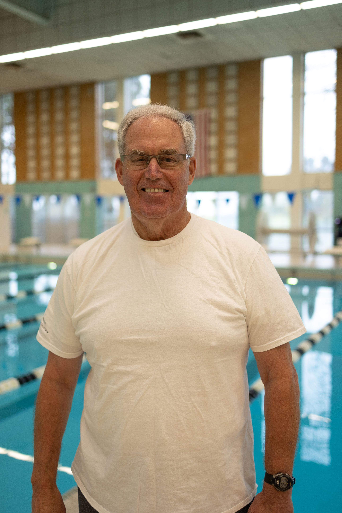

Coaches

Dr. Glenn Mortensen
Head Coach
Coach Glenn Mortensen has been coaching the USU Swim and Dive Club since 2021. He is a University Of Utah alumni. Dr. Mortenson compiled state records and expanded the venues to Ogden and Logan. He also established a state championship meet with a team trophy based on a point system. In 1986, the state meet in April was split between Granger and Logan, with Salt Lake City earning the award. In 1987, Logan won it. Glenn Mortensen set new records in the 1,650 free in their age division in 1990- 212:10.00 for Mortensen in the 35-44.
Dr. Mortensen is a board-certified family physician who is affiliated with Logan Regional Hospital in Logan, Utah. Logan Regional Hospital is a 146-bed general hospital, serving residents of northern Utah, southeastern Idaho, and western Wyoming. It is owned by Intermountain Healthcare. The hospital strives to provide medical services the community needs, including cancer, heart, and women and newborn services.
Dr. Mortensen earned his medical degree from the University of Utah School of Medicine in 1975. He then went on to complete his residency in family medicine at Providence Medical Center in Detroit, Michigan. During his residency training he also spent three months in Finland where he received training in obstetrics. Finland has led the world in their statistics pertaining to infant mortality. Dr. Mortensen is board-certified in family medicine by the American Board of Family Medicine (ABFM). The ABFM is a non-profit, independent medical association of American physicians who practice in family medicine and its sub-specialties.
Family medicine, formerly family practice, is a medical specialty devoted to comprehensive health care for all adults and children; the specialist is called a family physician or family doctor. Family physicians are often the first person whom a patient sees when seeking healthcare services. They examine and treat patients with a wide range of conditions and refer those with serious ailments to a specialist or appropriate facility.